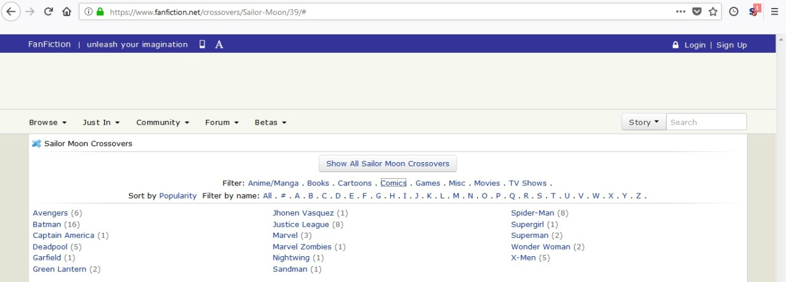
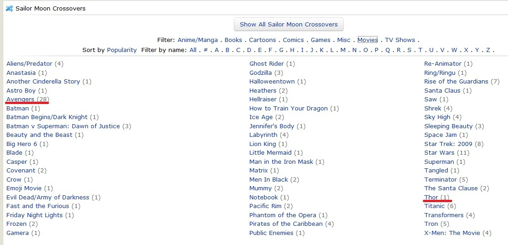
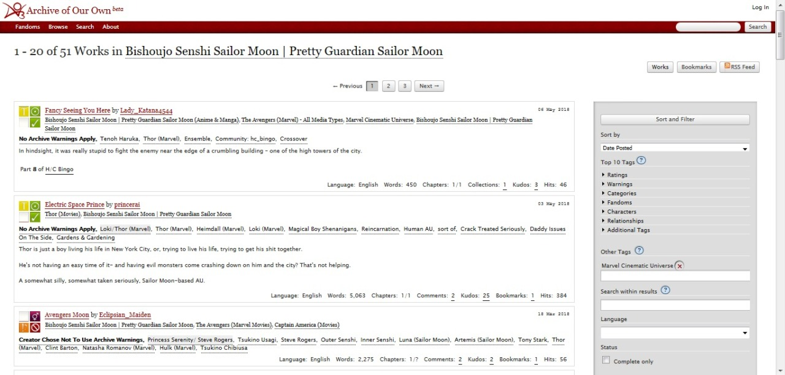

here is your challenge of the now: outline a Sailor Moon feature film in the Marvel Cinematic Universe
oh you know you want to
there are interesting challenges
you all are cowards

[screenshots of SM crossover pages on ff.net and AO3] They already exist bruh
the idea is making something work in a format change
“marvel movie” is a clearer kind of criteria than “movie”
I don’t want “Usagi meets Steve Rogers and they have coffee”, I want “how are we going to make a major film with five completely new, completely distinct heroines when we can’t have individual movies to introduce each of them” and “how do we make the character of Sailor Moon work in the big climactic parts of her stories when she isn’t explicitly the most important person in the world” and “how do you condense and capture the essence of this character the way that Marvel movies condense and capture the essence of their own?”
Micro-level thoughts:
* It goes against established Sailor Moon canon (mostly) (I think, it’s been ages), but I would be sorely tempted to have Usagi first meet the other Senshi in their Senshi identities in a crisis when they’re forced to work as a team, and then start getting to know them as actual people afterwards. There aren’t a lot of team-hero movies that work well, and one of the reasons for this is that the process of going through “this is Dude X’s backstory setup, this is Dude Y’s backstory setup, etc.” is super tedious and draggy even if you try to abbreviate it to near-pointlessness. Once we’ve already seen Sailor Mercury kicking ass and saving people we care about, then it becomes more interesting that she’s smart and shy etc.
* The first movie would benefit a lot from keeping the story small-scale, which Spider-Man narratives generally do and nothing else in the genre does at all. Usagi isn’t the most important person in the world, but she doesn’t have to be, because we’re not trying to save the world (yet), we’re trying to save a city or a district or a school. We can play around with the personal / psychological aspects of growing into heroism without ratcheting the stakes up to 11 immediately. Maybe the whole first movie even plays around with the idea that Sailor V / Venus is the real main heroine, etc.